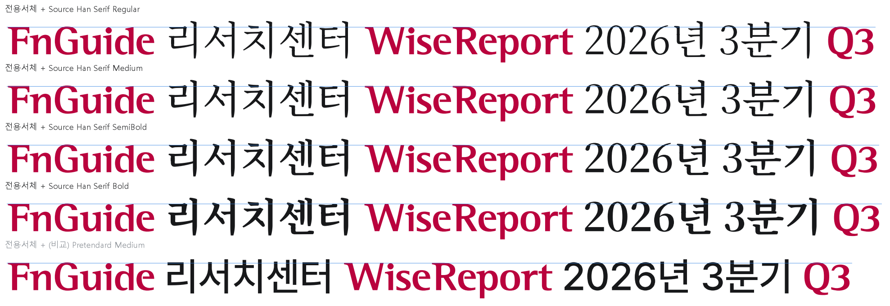
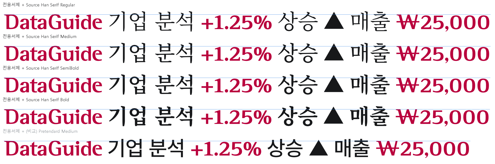

Source Han Serif는 어도비와 구글이 함께 만든 명조체로, 구글은 같은 디자인을 "Noto Serif KR"이라는 이름으로 배포합니다. 이 컴퓨터에 깔린 Noto Serif KR로 그렸습니다. 라이선스는 Pretendard와 같은 SIL 오픈 폰트 라이선스 1.1입니다(서체 파일에 적힌 내용으로 확인). 빨간 글자가 전용서체, 검은 글자가 한글 대용 서체, 파란 선이 전용서체 대문자 높이입니다. 모두 같은 글자 크기입니다.


| 한글 대용 서체 | 한글 높이 | 한글 세로획 굵기 | 전용서체 기둥 ÷ 한글 세로획 |
|---|---|---|---|
| Source Han Serif Regular | 0.96 | 0.072 | 1.81 |
| Source Han Serif Medium | 0.96 | 0.084 | 1.55 |
| Source Han Serif SemiBold | 0.97 | 0.097 | 1.34 |
| Source Han Serif Bold | 0.97 | 0.115 | 1.13 |
| (지금) Pretendard Medium | 0.87 | 0.093 | 1.40 |
전용서체 기둥 굵기는 0.130(글자 크기 1 기준)입니다. 1에 가까울수록 한글과 영문의 굵기가 비슷합니다. 명조체는 세로획이 굵고 가로획이 가늘어서, 전용서체의 굵기 차이(가로획이 세로획의 절반)와 성격이 비슷합니다. 다만 한글 높이가 Pretendard보다 약 10% 커서, 같은 크기로 쓰면 한글이 영문보다 크게 보입니다.